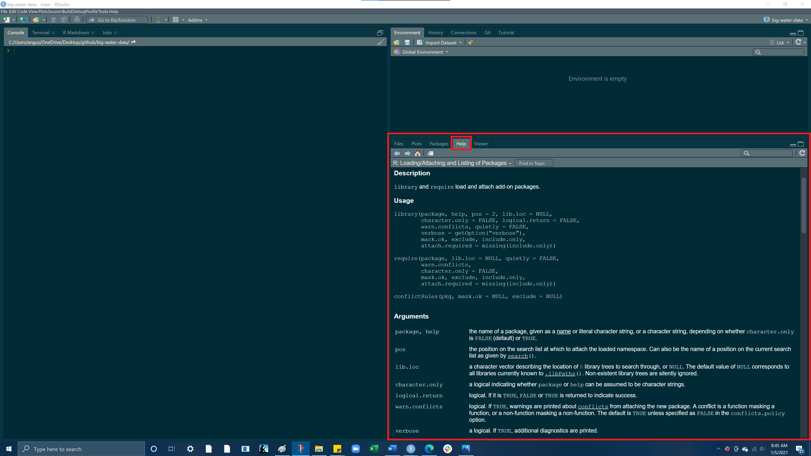

Goals
- Work within an RScript file (.R)
- Load libraries into an RScript (tidyverse & here)
- Read a .csv data file into an RScript
- Explore different data types and structures in R
Open Script from Pre-lab_02
- Open up your lab-02 Rproject from your Rprojects folder. At the top of your Rscript, you should have the #, followed by Lab-02, your name, and the date.
- Remind yourself what the hash symbol (i.e, #) does. The hash symbol is used to “comment out” text in your RScript. What does this mean? R does not run it as code. Note that if you kept your text, but removed the #, you would get an error message.
- It is good practice to use the # to comment on your code and describe your process. It helps you remember what code does, as well as helps you keep track of things like units. It also helps someone viewing your code to understand your processes.
- Note that under your intro comment, you should have two libraries ready to load with code that looks like the following
# Angus Watters
# ENVS 193 - Professor Perrone
# Lab 2
# 1/4/2021Load in libraries
- In this lab, we will be using the
tidyverseandherepackages - Load these libraries in by using the
library()function
library(tidyverse)
library(readr)
library(here)help() function
The help() function is a tool for understanding what a function does, what inputs it takes, and what outputs it gives. When you call the help function, the help page for the function you called will appear in the bottom right pane, a tab to the right of the Files tab.
The Help tab is great. At the bottom page you will find code examples for that function, you can run these yourself to get an idea of how to use a function! As you go through this lab, use the help() function to get more information on the functions we will be using. You can access the help for any function; for example, let’s use the help function to get information on the library function.
help(library) # calling help for the library() function
Read in a .csv file using here()
- Click here to download a .csv file of water data ADD LINK TO CSV DATA
- Once the file downloads, save it into the
data folderin your project directory. - Now lets read that .csv file into our Rscript using the
read_csv()function and thehere()function
- here() allows you to locate files relative to your project root. It finds files based on the current working directory at the time when the package is loaded. This means that if someone else would like to run your code, the file path will adjust to that persons current working directory, giving them a file path to the data. Using here() is good practice as it allows for a reproducible file path for whoever is using the code. Reproducible code and work flows allows you to cut down on extra coding in the future and saves time in the long run for you and anyone else who might want to use your code.
My current working directory when I loaded the here package
here()## [1] "C:/Users/angus/OneDrive/Desktop/github/big-water-data"So to access the export.csv file in our data folder we need to get to
“C:/Users/angus/OneDrive/Desktop/github/big-water-data/data/export.csv”
here() will give us an easy way of finding this path
here("docs/data/export.csv")## [1] "C:/Users/angus/OneDrive/Desktop/github/big-water-data/docs/data/export.csv"read_csv(here("docs/data/export.csv"), skip = 1)## # A tibble: 0 x 14
## # ... with 14 variables: `1` <chr>, `49.94` <chr>, `0.52` <chr>, `6.36` <chr>,
## # `55.95` <chr>, `52.95` <chr>, `3` <chr>, `0.88` <chr>, `0` <chr>,
## # `0.04` <chr>, `0_1` <chr>, `0_2` <chr>, `0_3` <chr>, `113.69` <chr>Run this code and you’ll notice the dataframe outputs to our console. How do we save this dataframe to a variable so we can conveniently access again.
Variables
Lets create a variable named water_df and assign it to our .csv file!
water_df = read_csv(here("docs/data/export.csv"), skip = 1)
If you look at your environment (top right pane) you should see a variable called water_df which has 1 observation of 14 different variables!
Now run water_df in your Rscript or your console you should see this:
water_df## # A tibble: 0 x 14
## # ... with 14 variables: `1` <chr>, `49.94` <chr>, `0.52` <chr>, `6.36` <chr>,
## # `55.95` <chr>, `52.95` <chr>, `3` <chr>, `0.88` <chr>, `0` <chr>,
## # `0.04` <chr>, `0_1` <chr>, `0_2` <chr>, `0_3` <chr>, `113.69` <chr>Before getting into the data within our data frame lets just quickly look at different data structures within R
Data Structures
Vectors
- Vectors can be created using the
c()(combine) function - The length can be checked with
length()
Character vector
Let’s use c() to make a character vector of different water demand sectors
water_demands = c("Public Supply", "Domestic", "Industrial")
water_demands## [1] "Public Supply" "Domestic" "Industrial"Numeric vector
Now let’s use c() to make a numeric vector detailing the volume of water use for each of these sectors
water_use = c(49.94, 0.52, 6.36)
water_use## [1] 49.94 0.52 6.36Adding elements to a vector
If we wanted to add Irrigation to our water_demands vector, we would need to surround Irrigation in quotes to create a character string, as to match the data type of the other elements in the water_demands vector.
water_demands = c(water_demands, "Irrigation")
water_demands## [1] "Public Supply" "Domestic" "Industrial" "Irrigation"To add the volume of water use by Irrigation we can do the same thing but because this is a numeric vector we do not need to use quotation marks
water_use = c(water_use, 55.95)
water_use## [1] 49.94 0.52 6.36 55.95Subsetting a vector
To subset a vector we use [], this is known as indexing. Each element in a vector has an index based on its order in the vector.
If we want to retrieve only the 3rd element we would put a 3 in the brackets to “index the 3rd element”
water_demands[3]## [1] "Industrial"If you want to remove an element from a list, while keeping all the other elements, you can use the a negative. The following removes just the 3rd element from the list and returns a vector of the remaining elements
water_demands[-3] ## [1] "Public Supply" "Domestic" "Irrigation"If you want to get a range of elements from a vector use the :. The structure of this method is vector[startingElement:endingElement]
water_demands[1:3] ## [1] "Public Supply" "Domestic" "Industrial"Lists
An ordered collection of objects (components). A list allows you to gather a variety of (possibly unrelated) objects under one name. Extends vectors and allows elements to be any type - the list() function lets you create a list - Let’s input the values we used to create our water_demands and water_use vectors into a list
list = list(
c("Public Supply", "Domestic", "Industrial"),
c(49.94, 0.52, 6.36))But because we have already created vectors containing these values, a more efficient way of making this same list would be to call our vectors directly into list()
list2 = list(
water_demands,
water_use)
Use the class() function on our list2 variable, to check what type of data structure list2 is
class(list)## [1] "list"Subsetting a list
The content of elements of a list can be retrieved by using double square brackets []
Here if we call list2[[1]] we will be returning the first list element, water_demands
list2[[1]]## [1] "Public Supply" "Domestic" "Industrial" "Irrigation"
Then if we want to get a certain element from within our first list element water_demands we can use the same indexing we used with vectors
So within our first list element we want the object in index [1]
list2[[1]][1]## [1] "Public Supply"
We can do the same thing with the second list element, water_use
list2[[2]]## [1] 49.94 0.52 6.36 55.95list2[[2]][2]## [1] 0.52If we wanted to name the two elements of our list we can use the names() function.
To use the names() function you have to supply a vector with your desired names and this vector must have the same number of elements as the length of your list.
To check our lists length we can use the length() function
length(list2)## [1] 2So we see our list has a length of 2, therefore if we want to assign names to our list we need to supply a vector with 2 names.
names(list2) = c('sector', 'water_volume')
list2## $sector
## [1] "Public Supply" "Domestic" "Industrial" "Irrigation"
##
## $water_volume
## [1] 49.94 0.52 6.36 55.95Now we have a list with 2 elements named sector and water_volume respectively.
What if we wanted to match the element by index? That is we want the element in index 1 of the first vector to match with the element in index 1 of the second vector.
The function bind_rows() allows us to take the 2 vector sequences in list2 and bind the rows together, so index 1 in water_demands becomes row 1, column1 and index 1 in water_use becomes row 2, column1, thus matching.
binded_row_list = bind_rows(list2)If you assign bind_rows(list2) to a new variable binded_row_list and hit run. You will notice we have a new object in our environment!
Use the class() function on your binded_row_list object and what do you get?
Dataframes
a named list of vectors.
data.frames are one of the biggest and most important ideas in R, and one of the things that make R different from other programming languages
Unlike a regular list, in a
data.frame, the length of each vector must be the same.typically dataframes are read into R via
read_csv,read_table, orread_xls, depending on the file typedataframes can also be built using the
data.frame()function
Useful dataframe function
head()- shows first 6 rowstail()- shows last 6 rowsdim()- returns the dimensions of data frame (i.e. number of rows and number of columns)nrow()- number of rowsncol()- number of columnsstr()- structure of data frame - name, type and preview of data in each columnnames()orcolnames()- both show the names attribute for a data frame
Lets now inspect different qualities of this dataframe
Structure of a dataframe
If we use the class() function on our dataframe we see that it is a tbl_df, a tibble is very similar to a dataframe, but it also displays the type of data underneath each column heading name
class(water_df)## [1] "spec_tbl_df" "tbl_df" "tbl" "data.frame"And here is our dataframe. The data frame is 1 observation (rows) by 14 variables (columns)
Notice the num classification next to all of the columns, this is indicating the type of data in each column
str(water_df) ## tibble [0 x 14] (S3: spec_tbl_df/tbl_df/tbl/data.frame)
## $ 1 : chr(0)
## $ 49.94 : chr(0)
## $ 0.52 : chr(0)
## $ 6.36 : chr(0)
## $ 55.95 : chr(0)
## $ 52.95 : chr(0)
## $ 3 : chr(0)
## $ 0.88 : chr(0)
## $ 0 : chr(0)
## $ 0.04 : chr(0)
## $ 0_1 : chr(0)
## $ 0_2 : chr(0)
## $ 0_3 : chr(0)
## $ 113.69: chr(0)
## - attr(*, "spec")=
## .. cols(
## .. `1` = col_character(),
## .. `49.94` = col_character(),
## .. `0.52` = col_character(),
## .. `6.36` = col_character(),
## .. `55.95` = col_character(),
## .. `52.95` = col_character(),
## .. `3` = col_character(),
## .. `0.88` = col_character(),
## .. `0` = col_character(),
## .. `0.04` = col_character(),
## .. `0_1` = col_character(),
## .. `0_2` = col_character(),
## .. `0_3` = col_character(),
## .. `113.69` = col_character()
## .. )Subsetting a dataframe
- We can subset our dataframe and look at specific rows or columns by using
[]or$ - To subset with brackets the structure is
dataframe[row, column] - To subset using the $ the structure is
dataframe$column
So if we call water_df[1,2] we will get the first row and second column of our dataframe
water_df[1,2] # row 1, column 2## Warning: The `i` argument of ``[.tbl_df`()` must lie in [0, rows] if positive, as of tibble 3.0.0.
## Use `NA_integer_` as row index to obtain a row full of `NA` values.
## This warning is displayed once every 8 hours.
## Call `lifecycle::last_warnings()` to see where this warning was generated.## # A tibble: 1 x 1
## `49.94`
## <chr>
## 1 <NA>If we call just water_df[1,] we will get the entire first row with all the columns of our dataframe
water_df[1,] # row 1, column 2## # A tibble: 1 x 14
## `1` `49.94` `0.52` `6.36` `55.95` `52.95` `3` `0.88` `0` `0.04` `0_1`
## <chr> <chr> <chr> <chr> <chr> <chr> <chr> <chr> <chr> <chr> <chr>
## 1 <NA> <NA> <NA> <NA> <NA> <NA> <NA> <NA> <NA> <NA> <NA>
## # ... with 3 more variables: `0_2` <chr>, `0_3` <chr>, `113.69` <chr>You can use : to subset a range of columns, the structure to do this is dataframe[column1:column(n)]
water_df[1:4]## # A tibble: 0 x 4
## # ... with 4 variables: `1` <chr>, `49.94` <chr>, `0.52` <chr>, `6.36` <chr>Let’s subset the first row and the second column using the $
water_df$"Public Supply"[1]## Warning: Unknown or uninitialised column: `Public Supply`.## NULLAnd then the fourth column and all the rows (we only have 1 row in our dataframe so we will only get the first row)
water_df$Industrial## Warning: Unknown or uninitialised column: `Industrial`.## NULLYou’ll notice when we wanted to subset the first row and second column, water_df$"Public Supply"[1] we had to use quotations around the column name, but we didnt need to do this in the following example, water_df$Industrial. This is because the “Public Supply” has column has a space between the two words.
Try running the same code without the quotations and see what happens.
Did you receive an error?
The reason for this is because the “Public Supply” column has a space between the two words, this space needs to be acknowledged by R, this can be accomplished by adding the quotations, indicating everything in the quotes is the column name. We didn’t need to do this with the
water_df$Industrialcall as the column “Industrial” is all one word. This is one reason why it is important to be careful when naming data frame. Typically it is best to avoid spaces and instead it utlize the_character in place of a space.
Data types
Values in R can be one of 6 different types :
- numeric (e.g. 2, 2.15) - values w/ decimals
2. integer (e.g. 2L) - values w/o decimals (create w/ uppercase ‘L’)
3. character (e.g. “x”, “Welcome!”)
4. logical (e.g. TRUE, FALSE)
5. raw (e.g. holds bytes)
6. complex (e.g. 1+4i) - we are going to ignore
For this class we will be focused on numeric and character data types
The class() function tells us what kind of object is it (high-level)
The typeof() function can tell us the object’s data type (low-level)
Numerics
Let’s look at what data types are in our
water_dfdataframe we created
THe data type for the values in the Public Supply column
class(water_df$"Public Supply")## Warning: Unknown or uninitialised column: `Public Supply`.## [1] "NULL"And for the Industrial column
class(water_df$Industrial)## Warning: Unknown or uninitialised column: `Industrial`.## [1] "NULL"All of our columns contain numeric data types but you will encounter situations where you may have a column with character data types that you wish to be numeric, and vice versa.
The following example shows why this is important to know
Lets say we had country information on domestic and agricultural water use in some objects:
country = "Mexico"
domestic_water_use = 146
agricultural_water_use = 74If we wanted to we could add domestic_water_use and agricultural_water_use and get an answer
domestic_water_use + agricultural_water_use## [1] 220But what if we try and add domestic_water_use and country?
domestic_water_use + country## Error in domestic_water_use + country: non-numeric argument to binary operatorThis non-numeric argument error is saying that one of these objects is not a numeric value (country is a character value)
For whatever reasons, you will encounter data that has discrepencies like this and thus why it is good to look at the structure of whatever dataframe you’re working with.
What’s the difference between 2012 (the number) and '2012' (the character)?
class(2012) # numeric## [1] "numeric"class('2012') # character## [1] "character"When you surround a something in quotes (double or single), that element is coerced to the class of character, as shown above as the numeric 3 becomes a character once wrapped in quotes